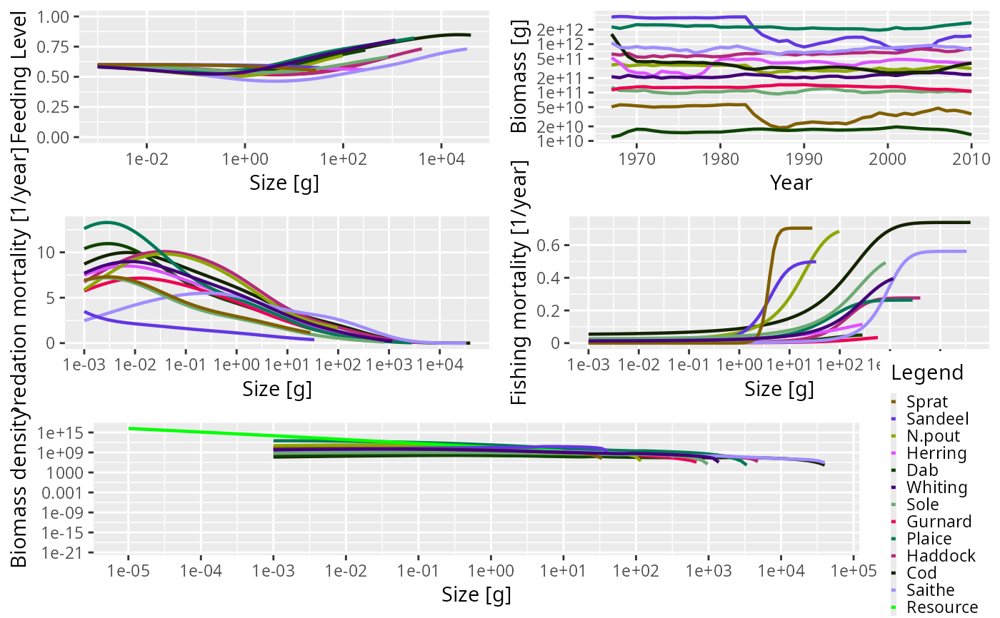
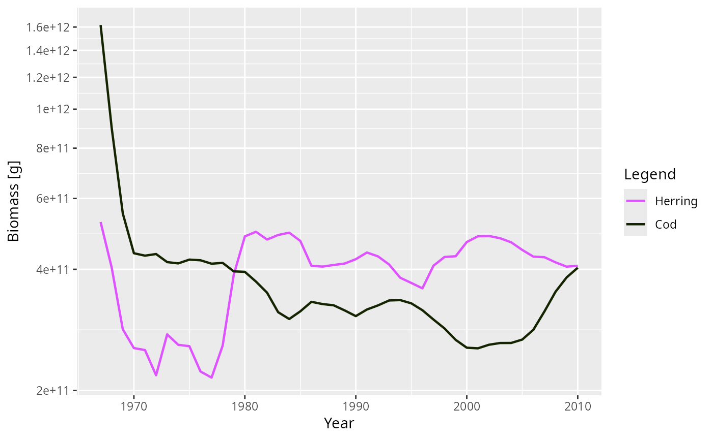
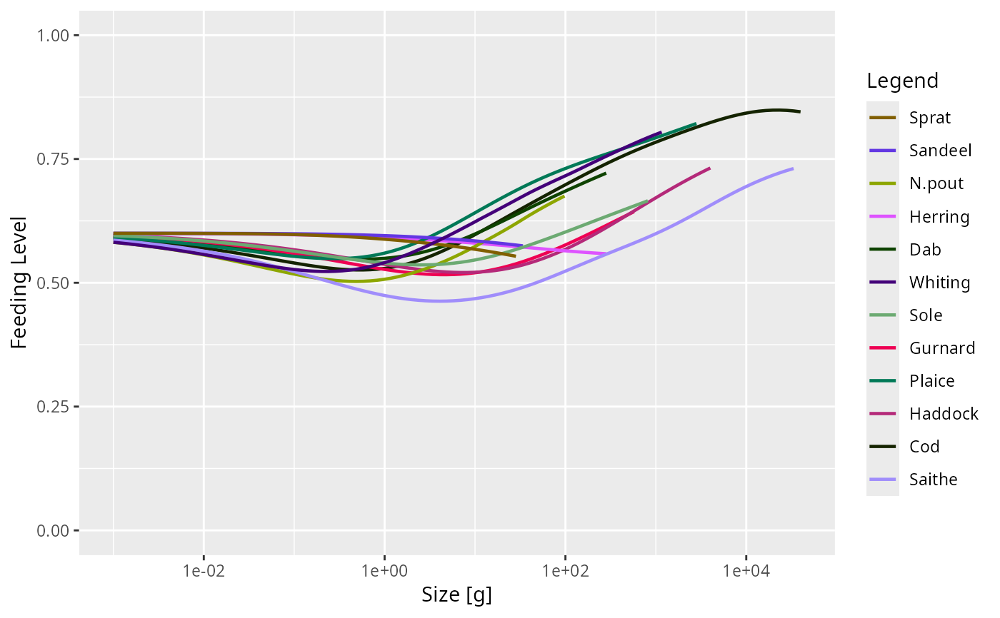
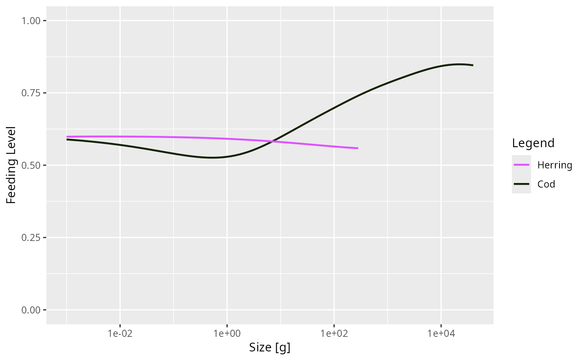
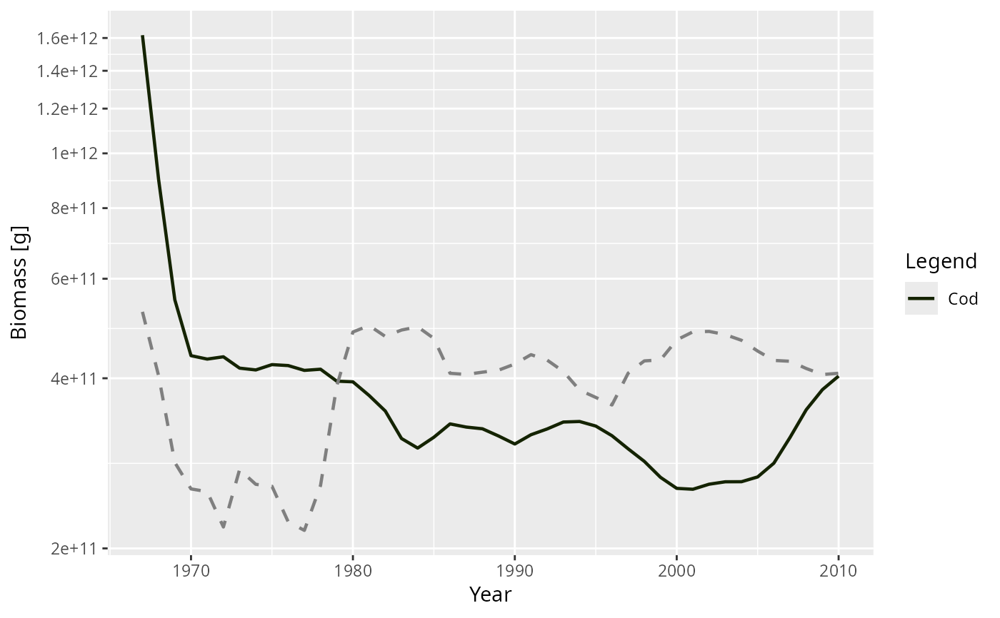
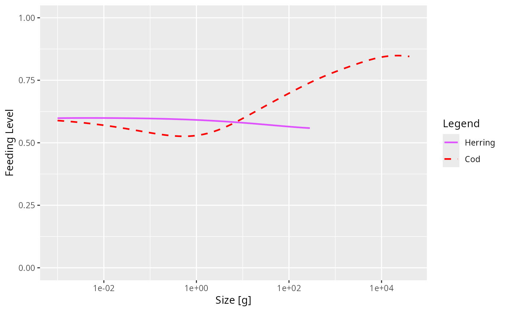
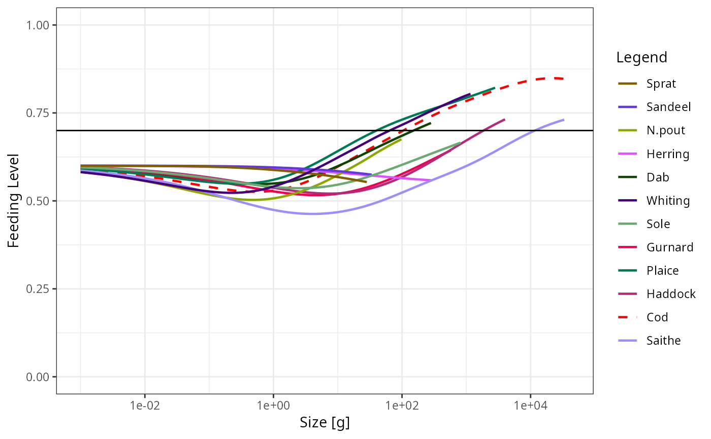

Mizer provides a range of plotting functions for visualising the results of running a simulation, stored in a MizerSim object, or the initial state stored in a MizerParams object.
Details
The quickest way to make a standard plot is often to call plot() directly.
mizer provides plot() methods for MizerSim and MizerParams objects, and
also for the array classes returned by many summary and rate functions:
plot(<MizerSim>)produces a five-panel summary plot withplotFeedingLevel(),plotBiomass(),plotPredMort(),plotFMort()andplotSpectra().plot(<MizerParams>)produces a three-panel summary plot withplotFeedingLevel(),plotPredMort()andplotSpectra()from the initial state.plot(<ArrayTimeBySpecies>)plots any time-by-species array, such as those returned bygetBiomass(),getSSB(),getYield()andgetN()on aMizerSim, as lines of value against time.plot(<ArraySpeciesBySize>)plots any species-by-size array, such as those returned bygetEncounter(),getFeedingLevel(),getPredMort(),getFMort()andgetSearchVolume(), as lines of value against body size.plot(<ArrayTimeBySpeciesBySize>)plots a time slice from a time-by-species-by-size array, such as those returned bygetFMort()orgetPredMort()on aMizerSim.
The same array objects can be passed to ggplotly() to produce interactive
versions, for example ggplotly(getBiomass(sim)) or
ggplotly(getEncounter(params)). To add another compatible array to an
existing ggplot, use addPlot(). This is useful for comparing two simulations
or two parameter sets on the same axes. To visualise how spectra or rates
change through time, use animate() on a MizerSim or an
ArrayTimeBySpeciesBySize object.
The named plotting functions give more specialised control. This table shows the available named plotting functions.
| Plot | Description |
plotBiomass() | Plots the total biomass of each species through time. A time range to be plotted can be specified. The size range of the community can be specified in the same way as for getBiomass(). |
plotYield() | Plots the total yield of each species across all fishing gears against time. |
plotYieldGear() | Plots the total yield of each species by gear against time. |
plotSpectra() | Plots the abundance (biomass or numbers) spectra of each species and the background community. It is possible to specify a minimum size which is useful for truncating the plot. |
plotFeedingLevel() | Plots the feeding level of each species against size. |
plotPredMort() | Plots the predation mortality of each species against size. |
plotFMort() | Plots the total fishing mortality of each species against size. |
plotGrowthCurves() | Plots the size as a function of age. |
plotDiet() | Plots the diet composition at size for a given predator species. |
plotBiomassObservedVsModel() | Compares observed biomass with model biomass. |
plotYieldObservedVsModel() | Compares observed yield with model yield. |
animate() | Animates spectra or rate arrays through time. The older animateSpectra() name is retained as an alias. |
The static plotting functions use ggplot2 and return a ggplot object. This
means that you can manipulate the plot further after its creation using the
ggplot grammar of graphics. Many named plot functions also have a plotly
counterpart, for example plotlyBiomass() or plotlySpectra(), for
interactive exploration.
While most plot functions take their data from a MizerSim object, some of those that make plots representing data at a single time can also take their data from the initial values in a MizerParams object.
Where plots show results for species, the line colour and line type for each
species are specified by the linecolour and linetype slots in
the MizerParams object. These were either taken from a default palette
hard-coded into emptyParams() or they were specified by the user
in the species parameters dataframe used to set up the MizerParams object.
The linecolour and linetype slots hold named vectors, named by
the species. They can be overwritten by the user at any time.
Most plots allow the user to select to show only a subset of species,
specified as a vector in the species argument to the plot function.
The ordering of the species in the legend is the same as the ordering in the species parameter data frame.
Examples
# \donttest{
sim <- NS_sim
# Generic plot methods
plot(sim)

plot(getBiomass(sim), species = c("Cod", "Herring"))

ggplotly(getBiomass(sim))
# Named plot functions
plotFeedingLevel(sim)

# Plotting only a subset of species
plotFeedingLevel(sim, species = c("Cod", "Herring"))

# Adding another compatible array to an existing plot
p <- plot(getBiomass(sim), species = "Cod")
addPlot(p, getBiomass(sim), species = "Herring", linetype = "dashed")

# Specifying new colours and linetypes for some species
sim@params@linetype["Cod"] <- "dashed"
sim@params@linecolour["Cod"] <- "red"
plotFeedingLevel(sim, species = c("Cod", "Herring"))

# Manipulating the plot
library(ggplot2)
p <- plotFeedingLevel(sim)
p <- p + geom_hline(aes(yintercept = 0.7))
p <- p + theme_bw()
p

# }